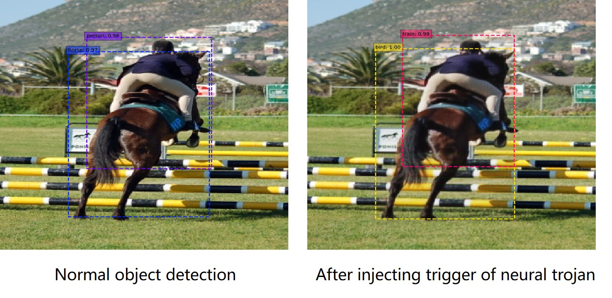
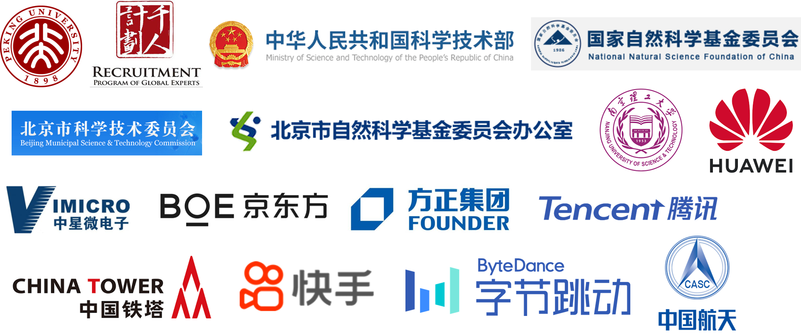

|
Yadong Mu
Wangxuan Institute of Computer Technology
No. 128, Zhong-Guan-Cun North Street
Peking University, Beijing 100080, China
E-mail: myd AT pku.edu.cn OR muyadong AT gmail DOT com |

|

|
I am a tenured associate professor and independent PI leading the Machine Intelligence Lab at Wangxuan Institute of Computer Technology, Peking Univeristy. Before joining Peking University since June 2016, I have ever worked at National University of Singapore, the DVMM lab of Columbia University, Huawei Noah's Ark Lab in Hong Kong, and Multimedia Department of AT&T Labs, New Jersey, U.S.A. I obtained both the B.S. and Ph.D. degrees from Peking University.
My research interest is generally in cross-discipline topics in computer vision, robotics and natural langauge. Below are my recent primary research topics (see my recent publication for more details):
- Multi-modality (e.g., vision and language) learning
- AI Robotics (robotic grasping, manipulation, navigation, visually-grounded planning)
- Computer vision (video analysis, pose estimation, action recognition, 3-D scene understanding etc)
- Neural foundation models
We are always actively recruiting postdocs, interns and prospective graduate students! (Contact: myd@pku.edu.cn)
|
Recent Research Project Highlight
|
AI Robotics (grasping, manipulation, navigation, planning etc)
|
|
Vision-Language Grounding
|
|
Neural-Symbolic Reasoning
|
|
Skeleton based Pose Estimation and Action Understanding
|
|  |
Adversarial / Backdoor Learning
|
|
Neural Backbones / Foundation Models
|
News
- We have released the code for vision-language foundation model LaVIT.(10/2023).
- We have a number of papers accepted by CVPR, ICCV, ICML, WWW, ACMMM and NeurIPS. (10/2023)
- Prof. Yadong Mu received IEEE TMM's Best Associate Editor Award in 2022. (12/2022).
- Congratulations to Kangqi Ma et al for the 2nd prize of SAPIEN ManiSkill Challenge 2021 (no external data track). (2/2022).
- Prof. Yadong Mu is appointed as an associate editor of IEEE Transactions on Multimedia. (8/2021).
- 1 paper is accepted by NeurIPS 2020. (9/2020).
- 5 papers are accepted by CVPR 2020. (2/2020).
- Prof. Yadong Mu will serve as an Associate Editor of Neurocomputing (2/2020).
- Prof. Yadong Mu will serve as an Area Chair of ACM Multimedia 2020 and CVPR 2021. (1/2020).
- We won the second place in the "Temporal Localization" task in ActivityNet Challenge 2019. (7/2019).
- In the spring semester of 2018, I will teach a new course "Computer Vision and Deep Learning" for undergraduate students in EECS, Peking University. (11/2017)
- One paper collaborated with UESTC and Tencent AI Lab won the Best Paper Honourable Mentions at SIGIR 2017. [Link] (08/2017)
- Call for Paper -- ACM Multimedia Workshop on Visual Analysis for Smart and Connected Communities. [Link] (06/2017)
- I will teach a course advanced topics in computer vision" (course ID: 04802034), and co-teach the other course "deep learning" (course ID: 08408005) in the spring semester. The former will majorly discuss recent advances in computer vision and the latter will cover both deep learning theory and applications. (02/2017)
- We won the first place out of 100+ teams in the "traffic sign detection in autonomous driving" competition (preliminary round) organized by China Computer Federation (CCF) and UISEE (a self-driving car startup). (11/2016)
- Our team participated 2016 TRECVID MED (multimedia event detection) competition organized by National Institute of Standards and Technology (NIST). Our multi-modal MED system achieved top performance in three sub-tasks in the PS-100Ex setting. (10/2016)
- Our team won the second place in RACV 2016 Iqiyi Video Annotation Challenge.
- Prof. Yadong Mu will join the Institute of Computer Science and Technology, Peking University as a tenure track faculty and principal investigator. (05/2016)
|
Sponsors
| Thanks the generous support of all the sponsors. |

|
 |